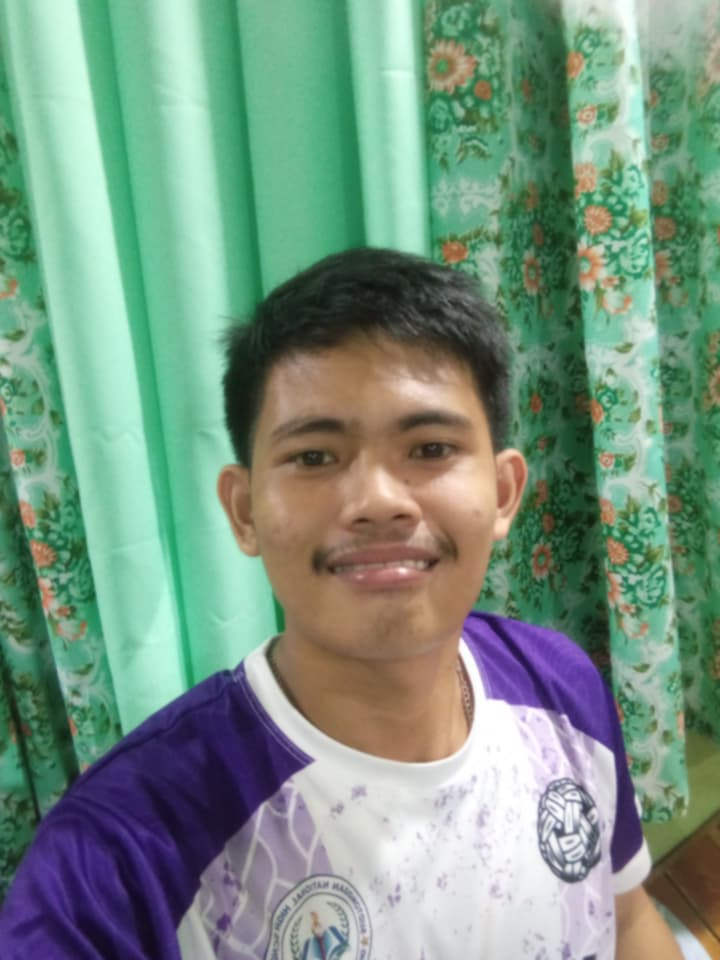

My name is Arren B. Capotilla.
I am a Grade 11 ICT Student.
I enjoy learning programming and improving my computer skills every day.

This image represents me as a learner and future programmer. I am an aspiring Drade 11 ICT student from Lapu-lapu City. I am passionate about learning how to code, design wedsites, and understand how technology shapes our world. I always tryy best in my studies so i can turn my tech dreams into reality.
These are some of the hobbies and interests that describe me:
Below are my top five favorite foods:
My favorite subject is Computer Programming. My favorite programming language to learn is HTML. I also enjoy discovering new coding techniques and building simple websites.
This audio represents one of my favorite songs that helps me relax and stay motivated. These are some of my educational goals:
These are the activities I usually do every day:
These are the important goals I want to achieve:
My dream career is to become a Software Engineer. I want to master programming, build helpful websites and mobile apps, and create technology that makes people’s daily lives easier. I also hope to contribute to the tech industry here in the Philippines and help other students like me learn about coding too.
"Every expert was once a begginer."
| My Daily Routine | |
|---|---|
| Monday | I start the week by organizing my school tasks and goals. |
| Tuesday | I focus on studying and finishing my assignments early. |
| Wednesday | MIDWEEK MEANS STAYING MOTIVATED AND NEVER GIVING UP! |
| Thursday | I review my lessons and prepare for quizzes or activities. |
| I also make time to relax by listening to my favorite music. | |
| Friday | I enjoy spending time with my classmates after classes. |
| Saturday | I rest, play games, or work on personal projects. |
| Sunday | I prepare eve |
Thank you for taking the time to read my personal profile!